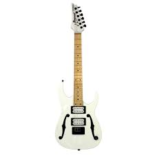

Qual você prefere?
JEM77P
R$20.000,00
Possui um corpo de basswood americano aparafusado a um bordo reforçado de titânio e no pescoço Wizard Premium de nogueira com uma escala de maple de 24 trastes com incrustações azuis de Tree of Life.
KIKO100
R$13.662,00
Braço de 5 peças em maple e walnut. Topo/Costas/Corpo (Top/Back/Body): Topo em flamed maple, corpo em alder. Escala (Fretboard): Escala em rosewood (Jacarandá) com marcações especiais KIKO. Trastes (Fret): Trastes jumbo com tratamento de borda Prestige.

PGMM31
R$3.000,00
Possui corpo em poplar, braço e escala em maple, ponte fixa, ferragens pretas e vem equipada com um par de captadores Ibanez Infinity Humbuckers. Sua eletrônica simplificada inclui chave seletora de 3 posições e um controle de volume master.